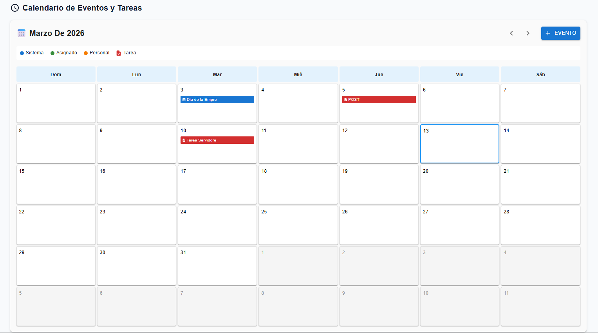
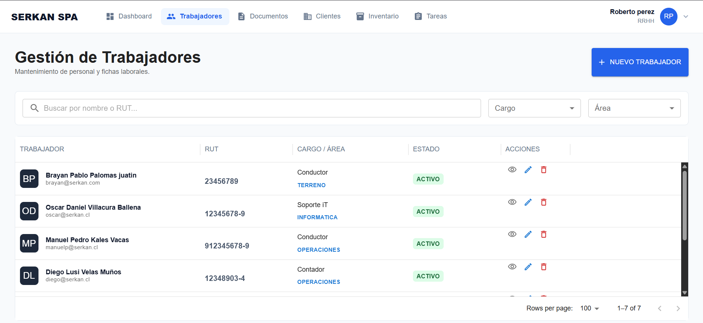
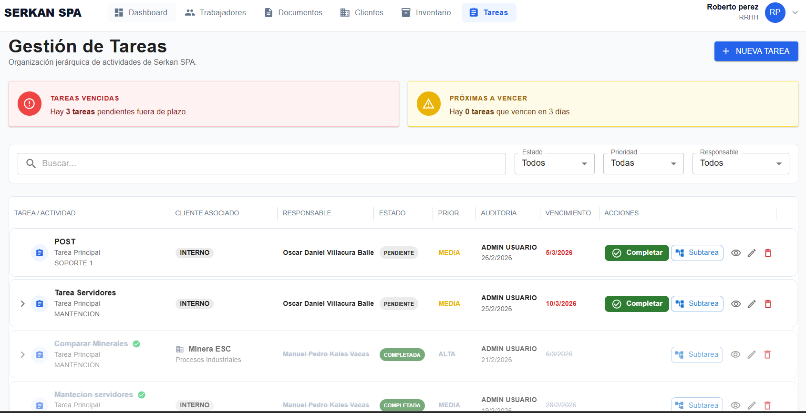

Sistema de Gestión Serkan Spa
Una plataforma web a medida para la gestión completa del negocio.
Resumen del Proyecto
Serkan Spa, una empresa en crecimiento, necesitaba una solución centralizada para superar los desafíos operativos de la gestión manual. Se desarrolló una aplicación web completa que integra todas las áreas del negocio, desde la administración de personal y clientes hasta el control de inventario y la programación de eventos.
El objetivo principal fue crear una herramienta intuitiva y potente que optimizara los flujos de trabajo, redujera errores manuales y proporcionara una visión clara del estado del negocio en tiempo real.
Características Principales
- Gestión de Personal: Administración de perfiles de trabajadores, roles, permisos y seguimiento de tareas.
- Base de Datos de Clientes: Fichas de clientes con historial de servicios, preferencias y datos de contacto.
- Control de Inventario: Seguimiento de stock de productos, alertas de bajo inventario y gestión de proveedores.
- Agenda y Eventos: Calendario interactivo para programar citas, eventos especiales y asignar recursos.
- Módulo de Documentación: Repositorio central para almacenar y compartir documentos importantes de la empresa de forma segura.
Galería de Imágenes


